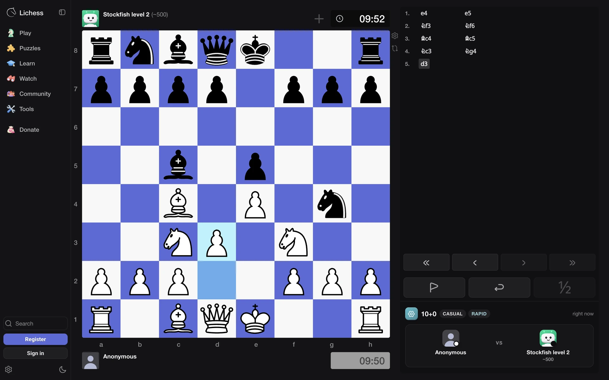
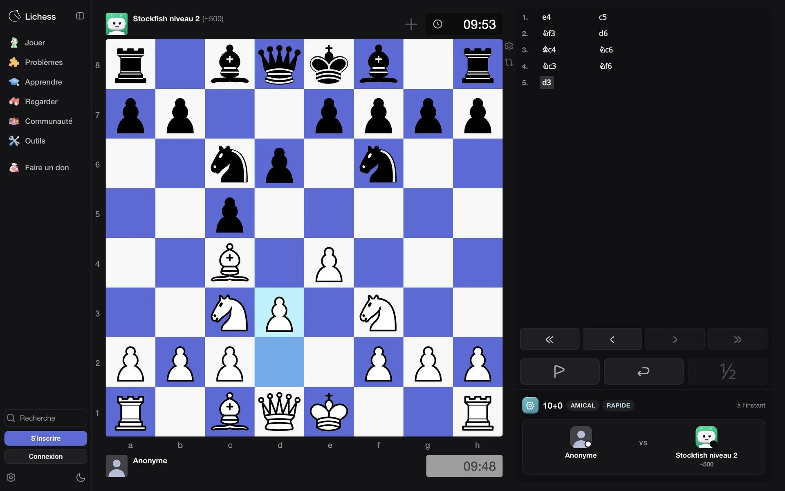
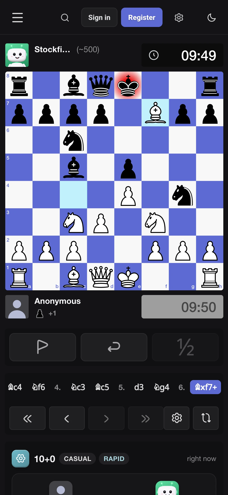
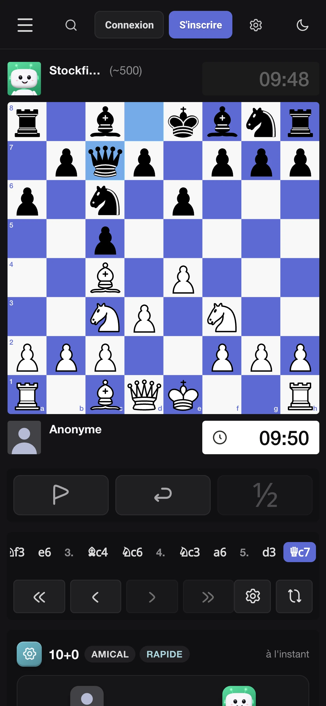

A roomy, modern layout, player bars with clocks, and a board that’s yours.
Une mise en page aérée et moderne, des barres de joueurs avec pendules, et un plateau à votre goût.
lichess.org/IFGhQdJO/FWNWBXHJ




Your board, your piecesVotre plateau, vos pièces
Player bars & clocksJoueurs et pendules